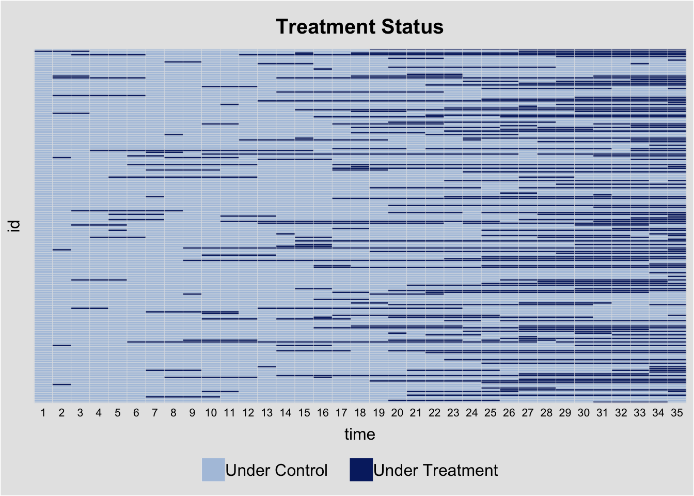
Quant II
Lab 7
Today’s Agenda
- Panel Imputation Methods
fectdemo code adapted from thefectpackage manual (https://yiqingxu.org/packages/fect/)- TWFE, Interactive Fixed Effect, Matrix Completion
fectDiagnostics
- Augmented Synthetic Control
augsynth - An exercise
fect’s simulated dataset
TWFE Imputation (fe)
- Borusyak, Jaravel & Spiess (2024)
- Model is fit only to pre-treatment and control data and then used to impute Y0s.
Implementation by hand with fixest
library(fixest)
modl <- feols(Y ~ X1 + X2 | id + time, data = simdata %>% filter(D == 0))
simdata$y0.impute <- predict(modl, newdata = simdata)
treated <- simdata %>% filter(D == 1)
att <- mean(treated$Y) - mean(treated$y0.impute)
att[1] 5.120725Implementation using fect package
library(fect)
fe <- fect(
Y ~ D,
index = c("id", "time"),
data = simdata,
method = "fe",
se = T)
plot(fe)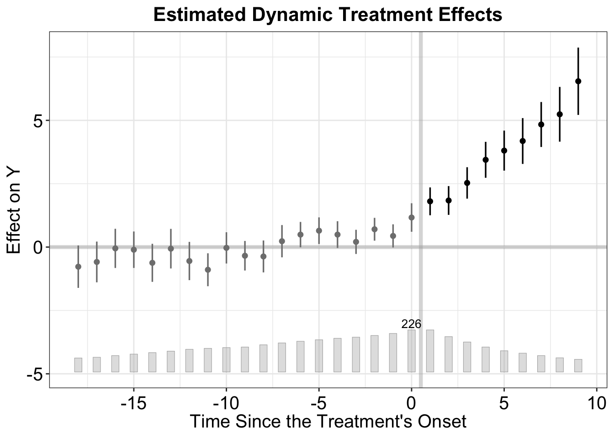
print(fe)Call:
fect.formula(formula = Y ~ D, data = simdata, index = c("id",
"time"), method = "fe", se = T)
ATT:
ATT S.E. CI.lower CI.upper p.value
Tr obs equally weighted 4.927 0.2901 4.358 5.495 0
Tr units equally weighted 3.569 0.2454 3.088 4.050 0# With covariates
fe.cov <- fect(
Y ~ D + X1 + X2,
index = c("id", "time"),
data = simdata,
method = "fe",
se = T)
plot(fe.cov)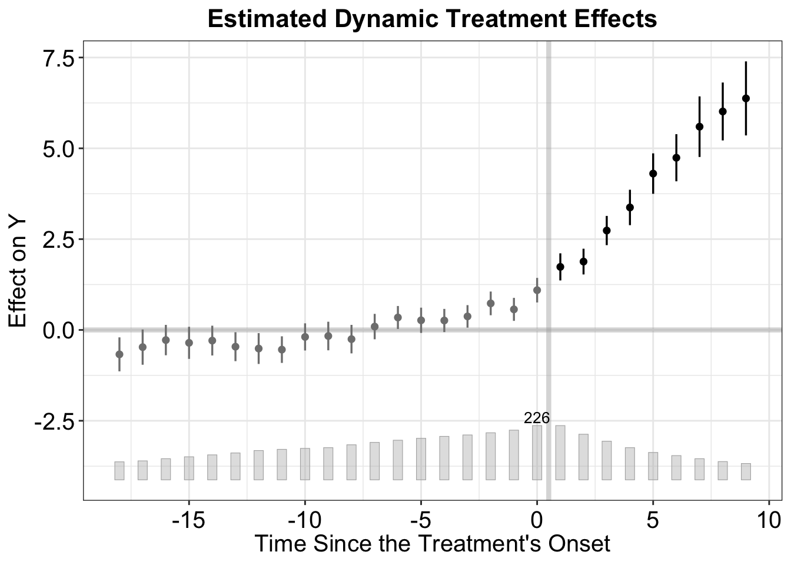
print(fe.cov)Call:
fect.formula(formula = Y ~ D + X1 + X2, data = simdata, index = c("id",
"time"), method = "fe", se = T)
ATT:
ATT S.E. CI.lower CI.upper p.value
Tr obs equally weighted 5.121 0.3036 4.526 5.716 0
Tr units equally weighted 3.622 0.2464 3.139 4.105 0
Covariates:
Coef S.E. CI.lower CI.upper p.value
X1 1.015 0.03322 0.9501 1.080 0
X2 2.937 0.03381 2.8706 3.003 0Interactive FE
- Basic idea: instead of assuming untreated outcomes are explained only by additive unit and time effects, allow for a small number of latent time-varying factors that affect units differently.
- Model r latent factors. Choose some low value r (usually r < 5)
- \(Y_it(0) = X'_{it}\beta + \alpha_i + \xi_t + \lambda_i'f_t + \epsilon_{it}\)
ife <- fect(
Y ~ D + X1 + X2,
index = c("id", "time"),
data = simdata,
method = "ife",
CV = TRUE,
r = c(0, 5),
se = T)
plot(ife)print(ife)Call:
fect.formula(formula = Y ~ D + X1 + X2, data = simdata, index = c("id",
"time"), r = c(0, 5), CV = TRUE, method = "ife", se = T)
ATT:
ATT S.E. CI.lower CI.upper p.value
Tr obs equally weighted 2.576 0.3168 1.955 3.197 4.441e-16
Tr units equally weighted 1.679 0.2041 1.279 2.079 2.220e-16
Covariates:
Coef S.E. CI.lower CI.upper p.value
X1 0.9971 0.03123 0.9359 1.058 0
X2 2.9782 0.02719 2.9249 3.031 0Matrix Completion
mc <- fect(
Y ~ D + X1 + X2,
index = c("id", "time"),
data = simdata,
method = "mc",
CV = TRUE,
se = T)
plot(mc)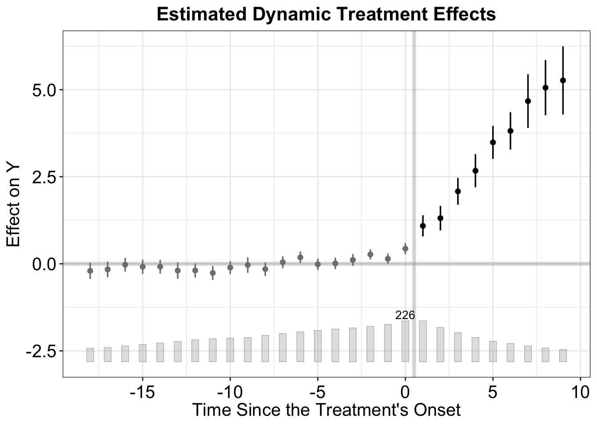
print(mc)Call:
fect.formula(formula = Y ~ D + X1 + X2, data = simdata, index = c("id",
"time"), CV = TRUE, method = "mc", se = T)
ATT:
ATT S.E. CI.lower CI.upper p.value
Tr obs equally weighted 4.262 0.2993 3.675 4.849 0
Tr units equally weighted 2.826 0.2222 2.390 3.261 0
Covariates:
Coef S.E. CI.lower CI.upper p.value
X1 1.017 0.03183 0.9548 1.080 0
X2 2.959 0.02858 2.9032 3.015 0Exit plot
plot(ife, type = "exit", main = "Exit Plot (FEct)")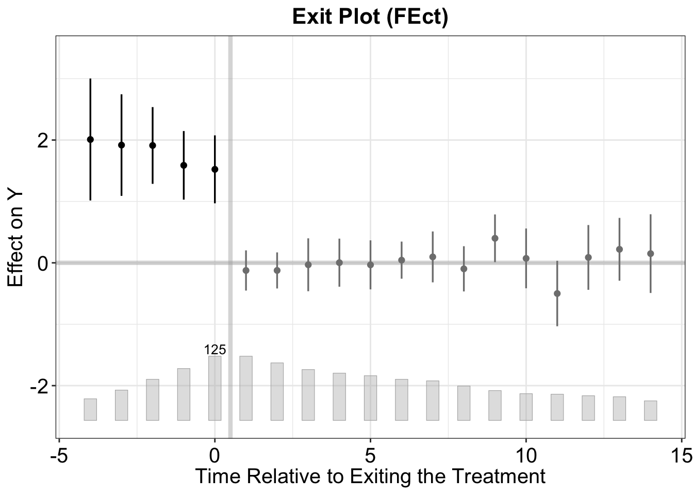
Diagnostics
https://yiqingxu.org/packages/fect/03-ife-mc.html#summary
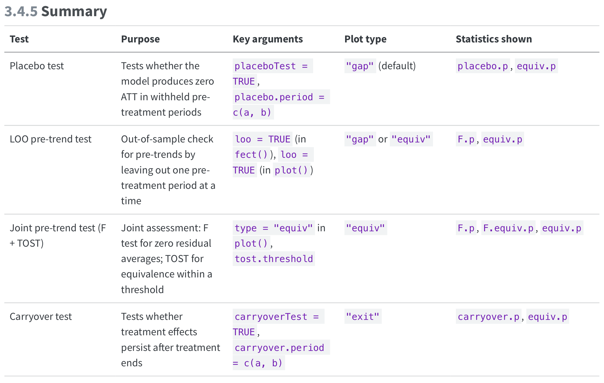
Placebo Tests
out.ife.p <- fect(Y ~ D + X1 + X2, data = simdata, index = c("id", "time"),
method = "ife", r = 2, CV = 0, se = TRUE,
placeboTest = TRUE, placebo.period = c(-2, 0))
plot(out.ife.p)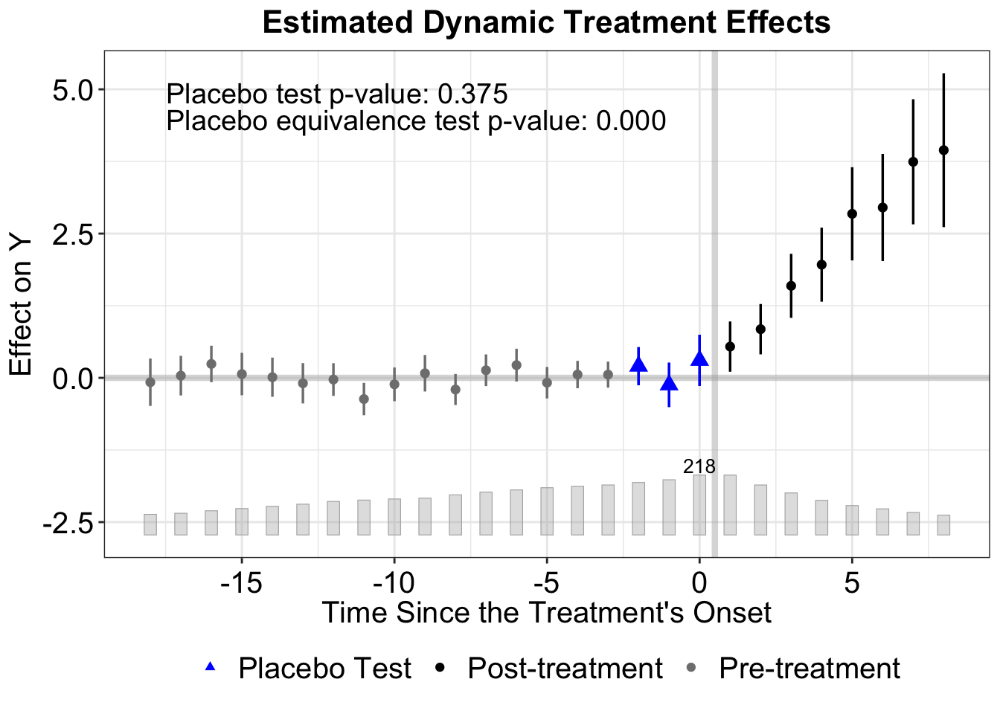
print(out.ife.p)Call:
fect.formula(formula = Y ~ D + X1 + X2, data = simdata, index = c("id",
"time"), r = 2, CV = 0, method = "ife", se = TRUE, placeboTest = TRUE,
placebo.period = c(-2, 0))
ATT:
ATT S.E. CI.lower CI.upper p.value
Tr obs equally weighted 3.100 0.4729 2.173 4.026 5.595e-11
Tr units equally weighted 1.968 0.2712 1.437 2.500 3.946e-13
Covariates:
Coef S.E. CI.lower CI.upper p.value
X1 0.9936 0.03053 0.9338 1.053 0
X2 2.9838 0.02850 2.9280 3.040 0
Placebo effect for pre-treatment periods:
Coef S.E. CI.lower CI.upper p.value CI.lower(90%)
Placebo effect 0.1314 0.148 -0.1587 0.4215 0.3745 -0.112
CI.upper(90%)
Placebo effect 0.3749out.mc.p <- fect(Y ~ D + X1 + X2, data = simdata, index = c("id", "time"),
method = "mc", lambda = mc$lambda.cv, CV = 0, se = TRUE,
placeboTest = TRUE, placebo.period = c(-2, 0))
plot(out.mc.p)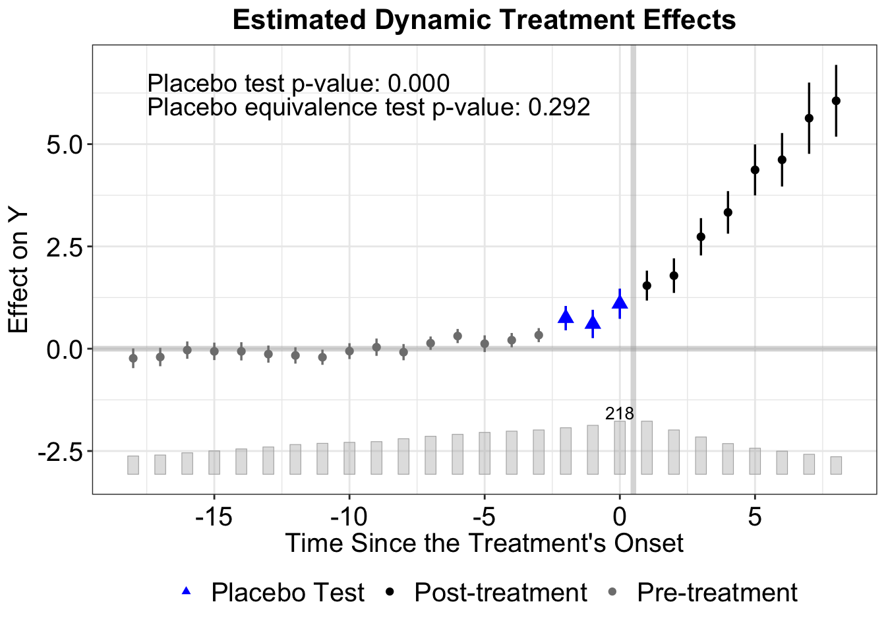
print(out.mc.p)Call:
fect.formula(formula = Y ~ D + X1 + X2, data = simdata, index = c("id",
"time"), lambda = mc$lambda.cv, CV = 0, method = "mc", se = TRUE,
placeboTest = TRUE, placebo.period = c(-2, 0))
ATT:
ATT S.E. CI.lower CI.upper p.value
Tr obs equally weighted 4.956 0.3410 4.287 5.624 0
Tr units equally weighted 3.304 0.2472 2.820 3.789 0
Covariates:
Coef S.E. CI.lower CI.upper p.value
X1 1.005 0.03211 0.9417 1.068 0
X2 2.962 0.03070 2.9017 3.022 0
Placebo effect for pre-treatment periods:
Coef S.E. CI.lower CI.upper p.value CI.lower(90%)
Placebo effect 0.8267 0.1262 0.5793 1.074 5.805e-11 0.6191
CI.upper(90%)
Placebo effect 1.034Carryover Tests
out.ife.c <- fect(Y ~ D + X1 + X2, data = simdata, index = c("id", "time"),
method = "ife", r = 2, CV = 0, parallel = TRUE, se = TRUE,
carryoverTest = TRUE, carryover.period = c(1, 3))
plot(out.ife.c, type = "exit", main = "Carryover Effects (IFE)")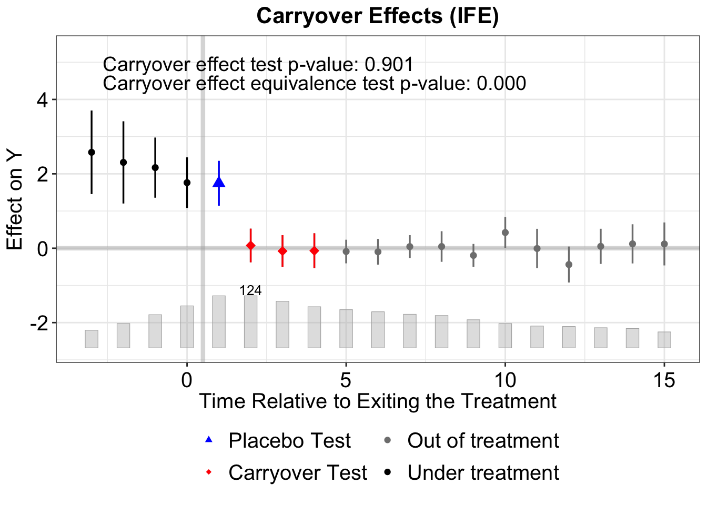
Remove Carryover Periods
out.ife.rm <- fect(Y ~ D + X1 + X2, data = simdata, index = c("id", "time"),
method = "ife", r = 2, CV = 0, parallel = TRUE, se = TRUE,
carryover.rm = 3, carryover.period = c(1, 3))
plot(out.ife.rm)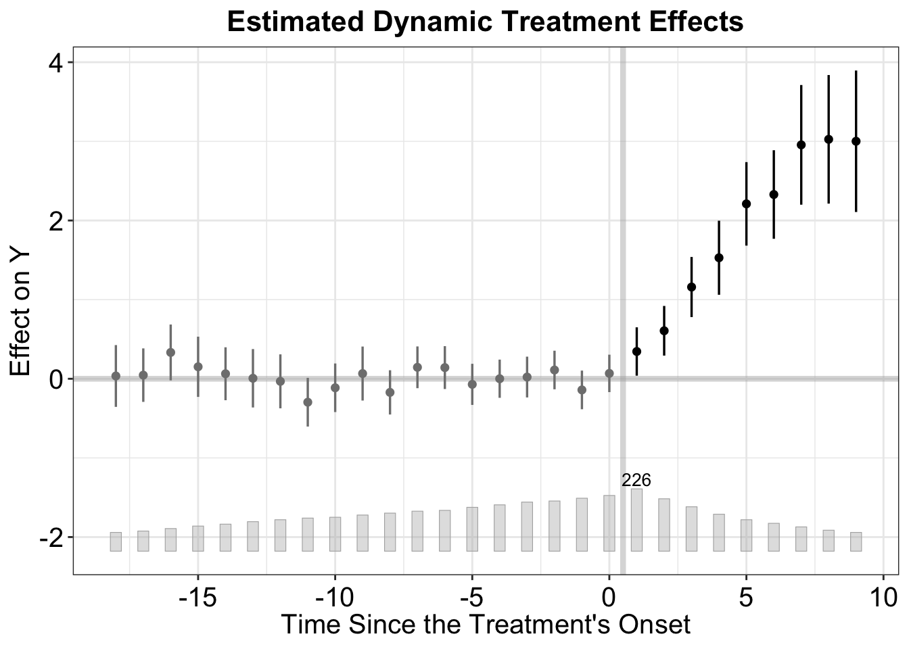
Generalized Synthetic Control
From the fect package manual:
- Gsynth: designed to handle block and staggered DID settings without treatment reversal, whereas other methods allow for treatment reversal under the assumption of limited carryover effects.
- Gsynth: particularly suited for cases where the number of treated units is small, including scenarios with only one treated unit. In contrast, other methods rely on large samples, particularly a large number of treated units, to obtain reliable standard errors and confidence intervals
- Compared with IFEct (method = “ife”), Gsynth does not rely on pre-treatment data from the treated units to estimate time components (e.g., factors). Hence,
time.component.from = "nevertreated". This approach speeds up computation, improves stability, and is more suitable for predictive inference based on row exchangeability.
panelview(
Y = "y", D = "treated", data = sim_staggered,
index = c("id", "period"), by.timing = TRUE, display.all = TRUE)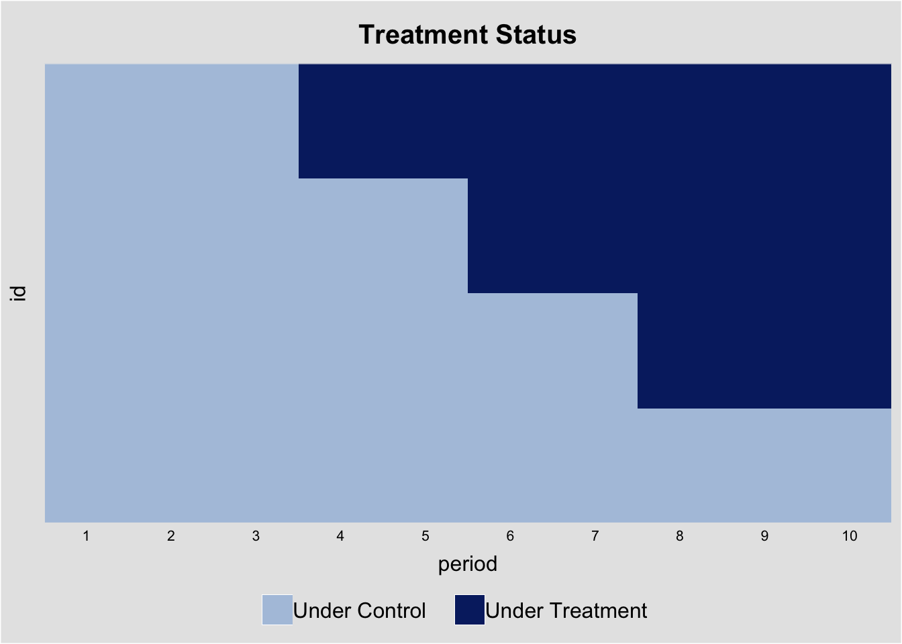
gsynth <- fect(
y ~ treated,
index = c("id", "period"),
data = sim_staggered,
method = "gsynth",
CV = TRUE,
r = c(1, 5),
se = T,
vartype = "jackknife")
plot(gsynth)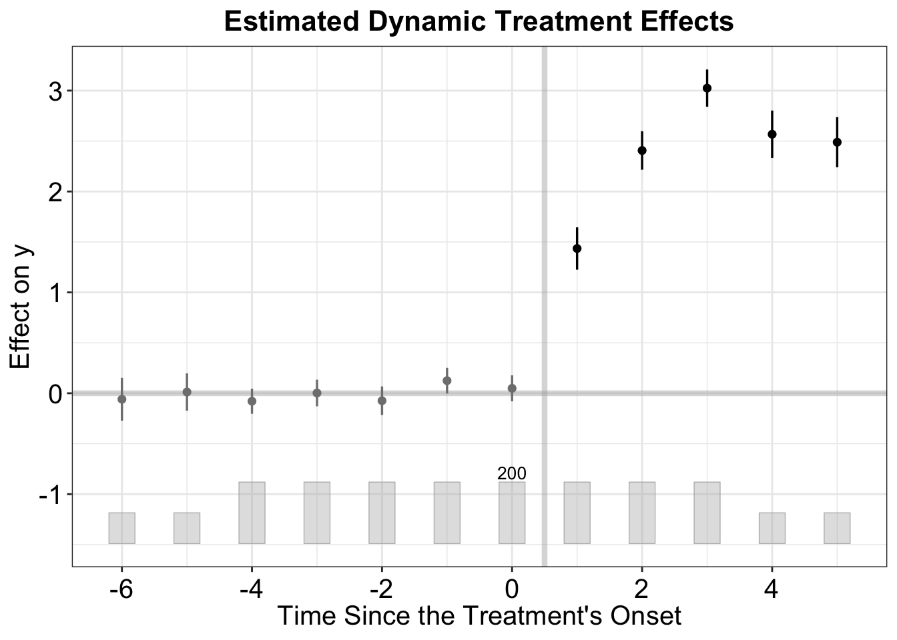
print(gsynth)Call:
fect.formula(formula = y ~ treated, data = sim_staggered, index = c("id",
"period"), r = c(1, 5), CV = TRUE, method = "gsynth", se = T,
vartype = "jackknife")
ATT:
ATT S.E. CI.lower CI.upper p.value
Tr obs equally weighted 2.348 0.06275 2.225 2.471 0
Tr units equally weighted 2.430 0.06328 2.306 2.554 0fect Manual
Augmented Synthetic Control augsynth
asyn <- multisynth(y ~ treated, id, period, sim_staggered)
asyn.summ <- summary(asyn)
asyn.summ
Call:
multisynth(form = y ~ treated, unit = id, time = period, data = sim_staggered)
Average ATT Estimate (Std. Error): 1.760 (0.099)
Global L2 Imbalance: 0.001
Scaled Global L2 Imbalance: 0.011
Percent improvement from uniform global weights: 98.9
Individual L2 Imbalance: 0.163
Scaled Individual L2 Imbalance: 0.129
Percent improvement from uniform individual weights: 87.1
Time Since Treatment Level Estimate Std.Error lower_bound upper_bound
0 Average 1.010538 0.1001625 0.8127065 1.203891
1 Average 1.898558 0.1190071 1.6752310 2.138906
2 Average 2.372293 0.1325938 2.1200289 2.624497plot(asyn.summ, levels = "Average")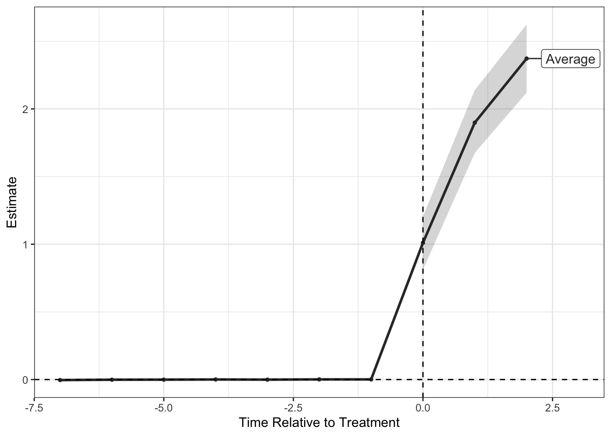
Collapsing treated units with the same treatment time into time cohorts, and find one synthetic control per time cohort
asyn_time <- multisynth(y ~ treated, id, period, sim_staggered,
time_cohort = TRUE)
asyn_time.summ <- summary(asyn_time)
asyn_time.summ
Call:
multisynth(form = y ~ treated, unit = id, time = period, data = sim_staggered,
time_cohort = TRUE)
Average ATT Estimate (Std. Error): 1.790 (0.088)
Global L2 Imbalance: 0.652
Scaled Global L2 Imbalance: 0.083
Percent improvement from uniform global weights: 91.7
Individual L2 Imbalance: 3.739
Scaled Individual L2 Imbalance: 0.237
Percent improvement from uniform individual weights: 76.3
Time Since Treatment Level Estimate Std.Error lower_bound upper_bound
0 Average 1.047741 0.08440102 0.8869457 1.217259
1 Average 1.899209 0.10468016 1.7037274 2.112683
2 Average 2.424179 0.11700827 2.1979354 2.656639plot(asyn_time.summ, levels = "Average")Chiu et al 2026 APSR
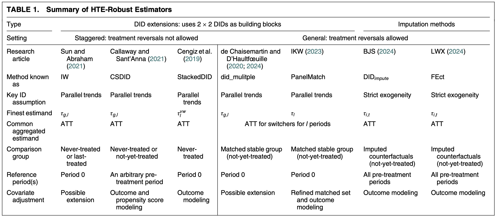
Class exercise
In groups, choose the most appropriate strategy for analyzing the given dataset and research question. Prepare a short presentation (no slides, you can just talk through code and figures) discussing why you chose the given strategy. Compare your results to another strategy that is less appropriate. Discuss the differences in the analysis
germany.rds
Country-year panel of gdp
Treatment variable is reunification of Germany post 1990s
Outcome: gdp
Treatment: treat
Interesting covariates: “trade”,“infrate”,“industry”, “schooling”, “invest80”
collective
Effects of states implementing mandatory collective bargaining agreements for public sector unions
Year, State: The state and year of the measurement
YearCBrequired: The year that the state adopted mandatory collective bargaining
lnppexpend: Log per pupil expenditures in 2010 dollars
Turnout
Effect of Election Day Registration laws on voter turnout in the United States
State-level voter turnout data
policy_edr = election-day registration policy
Kansas
- Economic indicators for US states from 1990-2016
- treated: Whether the state passed tax cuts before the given year and quareter
- Format: A dataframe with 5250 rows and 32 variables:
- Codebook:
fips FIPS code for each state
year Year of measurement
qtr Quarter (1-4) of measurement
state Name of State
gdp Gross State Product (millions of $) Values before 2005 are linearly interpolated between years
revenuepop State and local revenue per capita
rev_state_total State total general revenue (millions of $)
rev_local_total Local total general revenue (millions of $)
popestimate Population estimate
qtrly_estabs_count Count of establishments for a given quarter
month1_emplvl, month2_emplvl, month3_emplvl Employment level for first, second, and third months of a given quarter
total_qtrly_wages Total wages for a givne quarter
taxable_qtrly_wage Taxable wages for a given quarter
avg_wkly_wage Average weekly wage for a given quarter
year_qtr Year and quarter combined into one continuous variable
lngdpcapita Natural log of GDP per capita
emplvlcapita Average employment level per capita
Xcapita Per capita value of X
abb State abbreviation